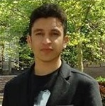
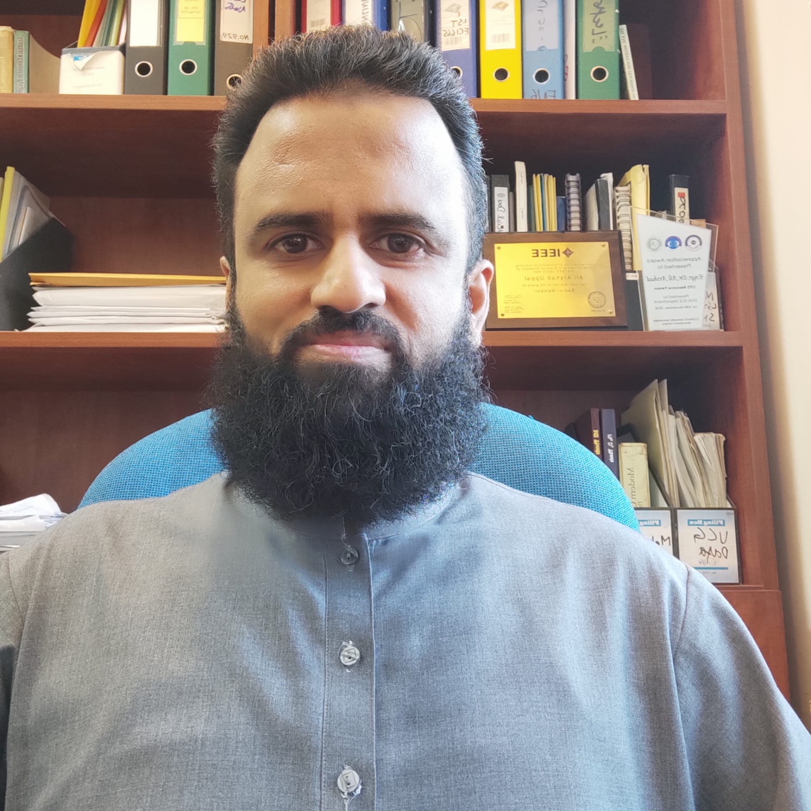
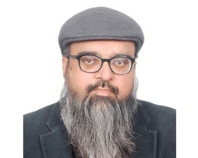
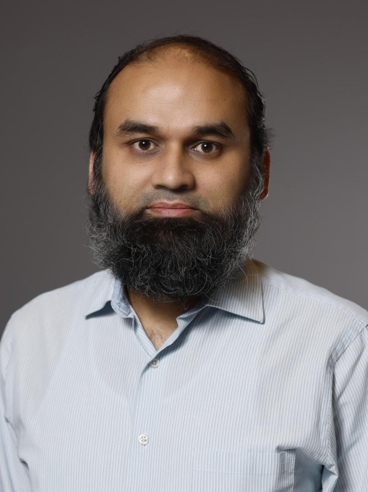
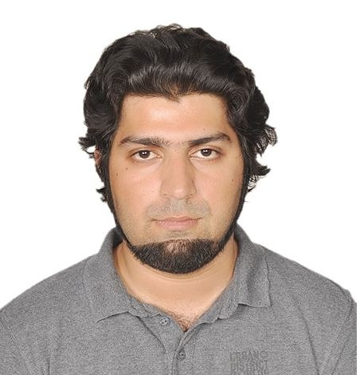
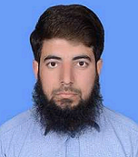
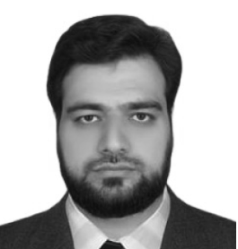

COMSATS University Islamabad

He received the B.Sc. degree in mathematics and computer science from the University of Peshawar in 2003, the M.Sc. and M.Phil. degrees in mathematics from Quaid-i-Azam University, Islamabad, in 2006 and 2008, respectively, and the Ph.D. degree in nonlinear control systems from M. A. Jinnah University, Islamabad, in 2012.
His research interests include robust nonlinear control design, observers design, fault detection in electro-mechanical systems, and multi-agent system’s control. He is listed in the Young Productive Scientists of Pakistan in the year 2017 and 2018
Phone: (+92) 051-9049159
Email: qudratullah@comsats.edu.pk
Address: Department of Electrical Engineering, COMSATS University Islamabad
Official Website | ORCID | Google Scholar | Linkedin | ResearchGate

He received his Ph.D. degree in electrical engineering (control systems) from COMSATS University Islamabad (CUI), Islamabad, Pakistan, in 2016.
His research interests include nonlinear control, energy conversion, energy storage, and clean energy technologies.
Phone: (+92) 51-9049255
Email: ali_arshad@comsats.edu.pk
Address: Room No. 229, Department of Electrical Engineering, COMSATS University Islamabad
Official Website | Research Portfolio Website | Google Scholar | Linkedin | ResearchGate

He received the master’s degree in control systems from Imperial College London and the Ph.D. degree in control engineering from Leicester University.
His research focuses on higher order sliding mode control, industrial systems, automotive systems, and robust control.
Phone: (+966) 13 860 5848
Email: aameriqbal.bhatti@kfupm.edu.sa
Address: King Fahd University of Petroleum & Minerals, Saudi Arabia

He received the Ph.D. degree in Control Systems from Mohammad Ali Jinnah University, Islamabad, Pakistan.
His research focuses on learning-based controls, machine learning, energy systems, sustainable mobility, and connected vehicles.
Phone: 614-292-0593
Email: ahmed.358@osu.edu
Address: The Ohio State University, USA
Ahmed Yar received his PhD in Control Systems in 2017 and specializes in control oriented system modeling, embedded systems design & development, and automotive power-train control.
His research interests focus on real-time control and embedded implementation for vehicular systems, energy, and power electronics applications.
He is actively engaged in independent research, development of rapid prototyping platforms, and the development of embedded solutions for advanced engineering systems.
He is currently contributing to a Pakistan Science Foundation (PSF)-funded project on the design and development of intelligent Battery Management Systems (BMS) for electric vehicle (EV) applications, emphasizing system performance enhancement, operational safety, and efficient energy utilization.

His research interests include mathematical modeling, simulation of battery management systems, and predictive control applications.

His current research interests include speed and flux control of induction machines and optimal control strategies for electric vehicles aimed at range extension.

His research interests include nonlinear control systems, model predictive control, and battery management systems.
Her doctoral research focuses on active cell balancing techniques for electric vehicle battery systems, emphasizing efficient energy management and control strategies.